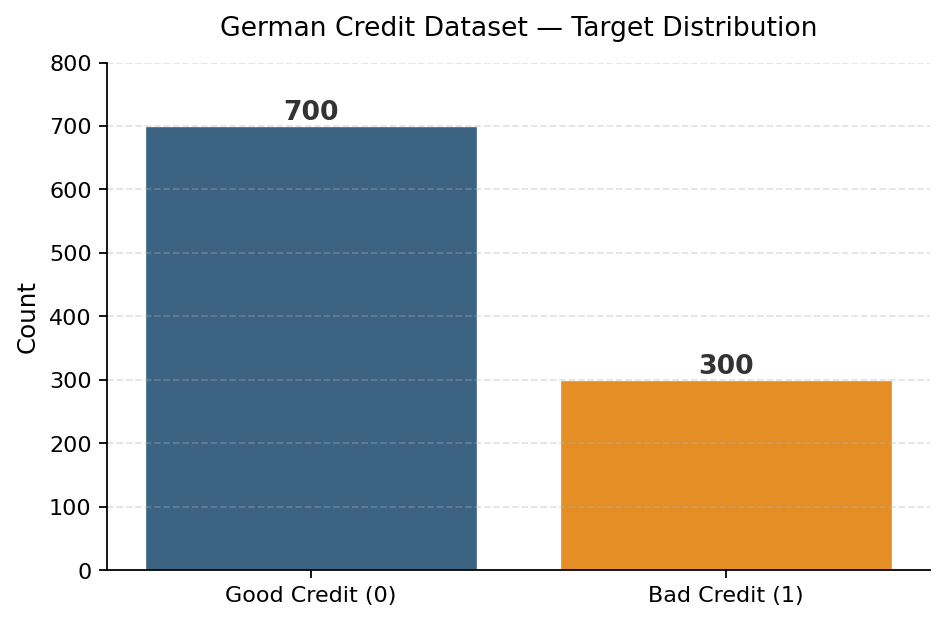
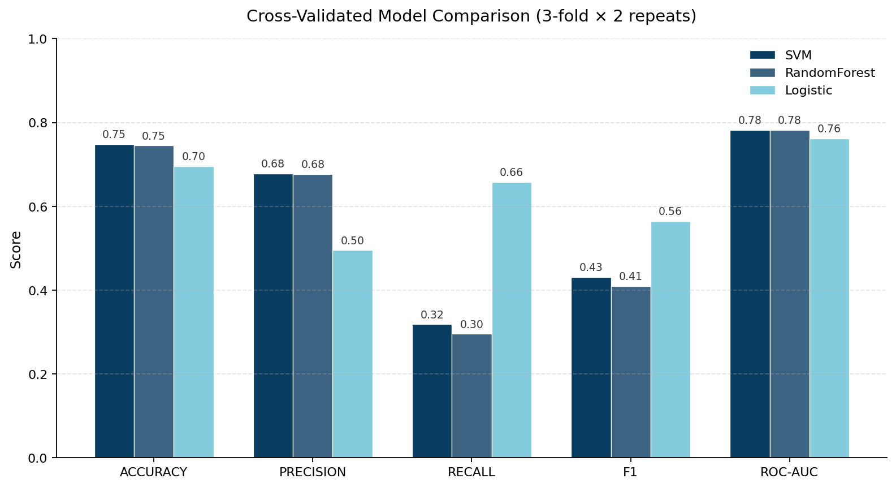
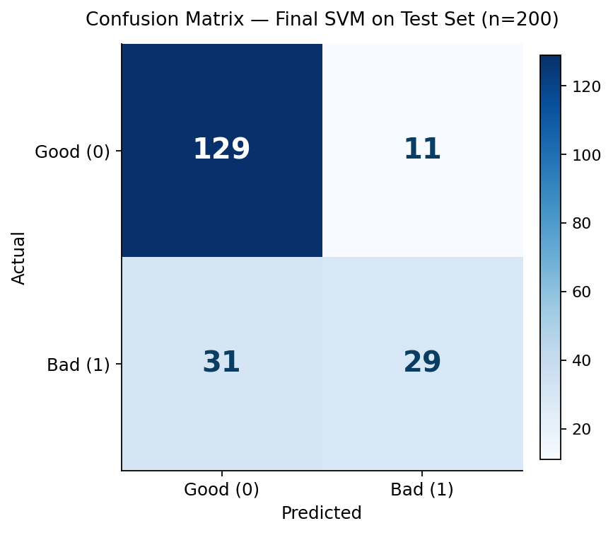

Credit Risk Classification — German Credit Dataset
Credit Risk Classification
German Credit Dataset
A clean, end-to-end scikit-learn pipeline that predicts whether a loan applicant is a credit risk. Compares Logistic Regression, Random Forest, and SVM with repeated stratified cross-validation across five metrics, and discusses the recall trade-off that matters most when the cost of a missed bad loan is asymmetric.
Problem framing
Credit risk classification is a textbook supervised learning problem with a non-textbook business consideration: the cost of the two error types is not symmetric. Approving a bad loan (false negative) is materially more expensive than rejecting a good one (false positive). That makes raw accuracy a poor single-metric optimizer — recall on the minority "bad credit" class and ROC-AUC are the more honest scorecards.
The goal of this project was to:
- Build a reproducible, leakage-free preprocessing + modeling pipeline.
- Benchmark three model families across five metrics with proper CV.
- Pick a final model based on the right metric for the business, not the highest accuracy.
Dataset
The classic UCI German Credit dataset (1,000 observations, 20 features — mix of numeric and categorical) loaded directly from a public mirror:
url = "https://raw.githubusercontent.com/selva86/datasets/master/GermanCredit.csv" df = pd.read_csv(url)
The published target encoding is 1 = good, 0 = bad, which is
unintuitive for "risk" — a bigger number should mean more risk. I flipped it
so 1 = bad (positive class = the thing we want to detect):
df["credit_risk"] = df["credit_risk"].map({1: 0, 0: 1})
That puts the class distribution at 700 good / 300 bad — a meaningful but not extreme imbalance.

Pipeline design
I used a single Pipeline per model so that all preprocessing
happens inside each CV fold — no leakage from the test fold into the
scaler or one-hot encoder.
numeric_cols = X.select_dtypes(include=np.number).columns
categorical_cols = X.select_dtypes(include="object").columns
preprocessor = ColumnTransformer([
("num", StandardScaler(), numeric_cols),
("cat", OneHotEncoder(handle_unknown="ignore"), categorical_cols),
])
models = {
"Logistic": LogisticRegression(max_iter=1000, class_weight="balanced"),
"RandomForest": RandomForestClassifier(n_estimators=100, class_weight="balanced"),
"SVM": SVC(probability=True),
}
A few deliberate design choices:
class_weight="balanced"on Logistic and RF to push them to actually try on the minority class, instead of collapsing to the majority-class predictor.handle_unknown="ignore"on the OHE — protects against unseen categories in test folds.stratify=yin the train/test split — preserves the class ratio.
Cross-validation
RepeatedStratifiedKFold(n_splits=3, n_repeats=2, random_state=42)
— six total folds, stratified, evaluated on five metrics simultaneously:
scoring = ['accuracy', 'precision', 'recall', 'f1', 'roc_auc']
scores = cross_validate(pipeline, Xtrain, ytrain, cv=cv,
scoring=scoring, n_jobs=-1)
Results — model comparison
| Model | Accuracy | Precision | Recall | F1 | ROC-AUC |
|---|---|---|---|---|---|
| SVM | 0.748 | 0.678 | 0.319 | 0.431 | 0.782 |
| Random Forest | 0.745 | 0.677 | 0.296 | 0.409 | 0.782 |
| Logistic Regression | 0.696 | 0.495 | 0.658 | 0.565 | 0.762 |

Final model — SVM on the test set
The notebook selects on ROC-AUC and ships SVM, evaluated on the held-out test set (n=200):
precision recall f1-score support
0 0.81 0.92 0.86 140
1 0.72 0.48 0.58 60
accuracy 0.79 200
macro avg 0.77 0.70 0.72 200
weighted avg 0.78 0.79 0.78 200

In plain terms:
- 129 / 140 good loans correctly approved (92% recall on class 0)
- 29 / 60 bad loans correctly rejected (48% recall on class 1)
- 31 bad loans approved by mistake — the most expensive cell in the matrix.
Discussion
A 79% accuracy SVM looks tidy on a slide, but if a bank deployed this model as-is it would still approve roughly half the bad applicants. The honest read of the experiment is:
- Choose by business metric, not default accuracy. For asymmetric-cost problems, recall on the positive class and the precision–recall trade-off at a chosen threshold beat any single number.
- Logistic Regression is the better starting point than the leaderboard implies. Its 0.66 recall vs. SVM's 0.32 means more risky applicants flagged, with only a small ROC-AUC penalty.
- Threshold tuning is the next obvious move. SVM's
predict_probaoutputs let you slide the decision threshold below 0.5 to trade precision for recall on class 1 — likely a much bigger win than swapping model families.
Possible next steps
- Tune the decision threshold on the validation fold (target recall ≥ 0.70).
- Apply SMOTE /
imbalanced-learnresampling inside the pipeline. - Add SHAP feature attributions for explainability — required for any real credit context.
- Cost-sensitive learning with explicit
(C_FN, C_FP)weights set by the business.